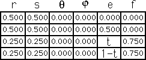
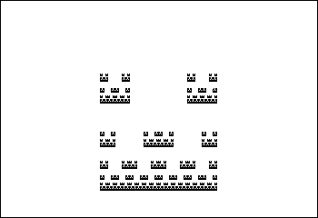

IFS Animations
Here we let t range between 0 and .375 in steps of 0.125.
Note the motion in each piece is a scaled version of the motion of the whole.
Is the idea of
fractal motion
beginning to be clear?

